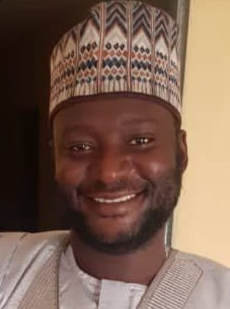

Zaharadeen Hamdana
Summary
I am passionate about my field of study. My dream is to increase my knowledge substantially so as to positively impact the society.
Education
- AHMADU BELLO UNIVERSITY ZARIA - PhD Electrical Engineering (In view)
- UNIVERSITY OF MANCHESTER - MSc Advanced Control Systems Engineering (Merit)
- AHMADU BELLO UNIVERSITY ZARIA - B.Eng. Elect. Engineering, A.B.U. Zaria with Second Class Honours (Upper Division)
- ESSENCE INTERNATIONAL SCHOOL KADUNA - Secondary Leaving Certificate (WAEC)
Work Experience
- Electrical Engineer at Archimodes Associates - Oct 2023 to Date
- Design of electrical services
- Supervision of electrical works
- Electrical Engineer at Guild & Build Limited - Jun 2023 to Date
- Design of electrical services
- Supervision of electrical works
- Research Fellow at Center for Renewable Energy, UMYU - Sept 2017 to Jun 2023
- Developed better research skills
- Consolidated practical experience with theoretical knowledge
- Developed a better understanding of renewables
- Technical Officer for EU Project - Sept 2017 to Jun 2023
- Design and fabrication
- Familiarity with international best practices for procurement process and administrative procedure
- Electrical Engineer at DPP&D, UMYU - May 2013 to Aug 2017
- Developed better research skills
- Consolidated practical experience with theoretical knowledge
- Developed a better understanding of renewables
Skills
- Excellent communications and interpersonal skills
- Good time management skills
- Excellent in team work
- Microsoft Office Package (Word, Excel and PowerPoint) - 🌟🌟🌟🌟🌟
- Proficiency in AutoCad, Matlab, Ladder Logic Programming and Labview - 🌟🌟🌟
- Ability to troubleshoot minor computer problems - 🌟🌟🌟🌟
Awards, Certifications, and Achievements
- PTDF Overseas Master’s Scholarship Award (2014)
- Chevron Undergraduate Scholarship Award (2006)
- Member Council for the Regulation of Engineering in Nigeria by COREN
- Member Nigerian Society of Engineers (MNSE) by NSE
- Solar PV Installation Supervision/Mini-Grid Certification by Center for Renewable Energy Umaru Musa Yar'adua University Katsina and German Agency
Other Details